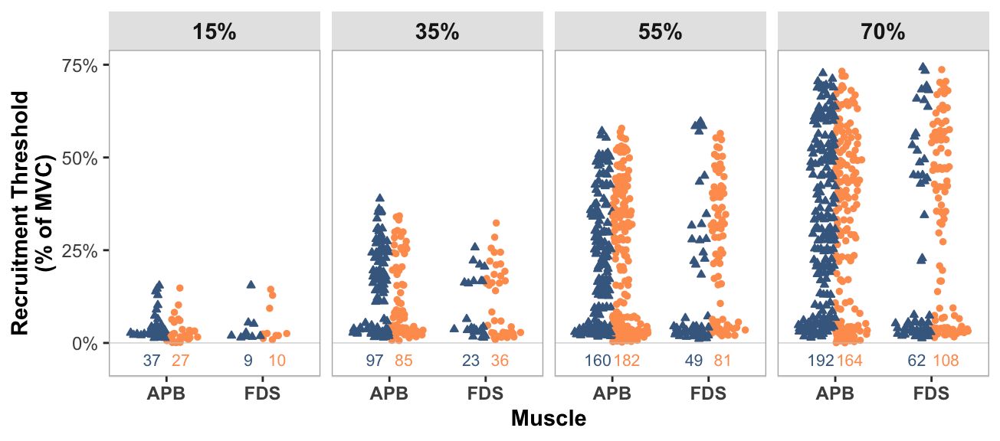
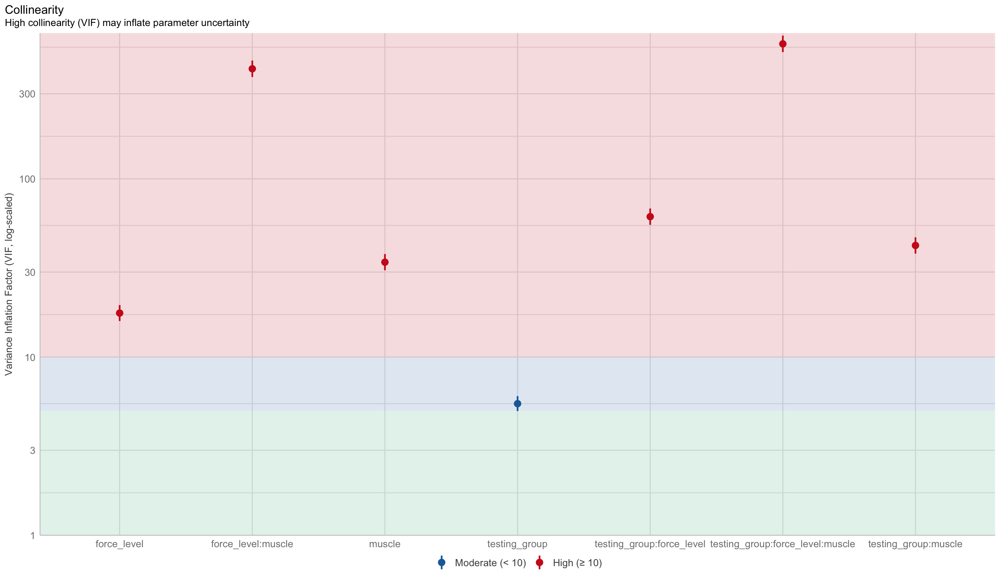
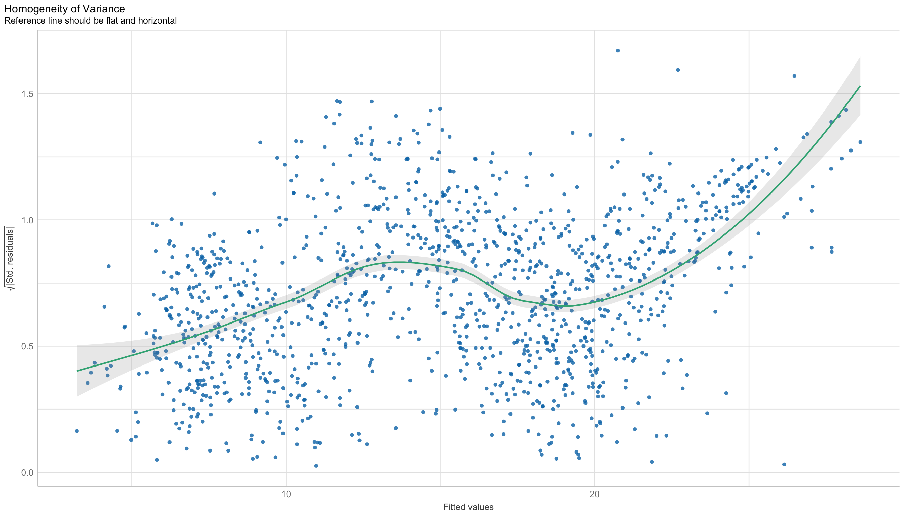
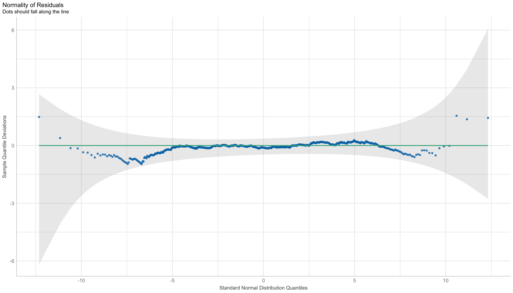
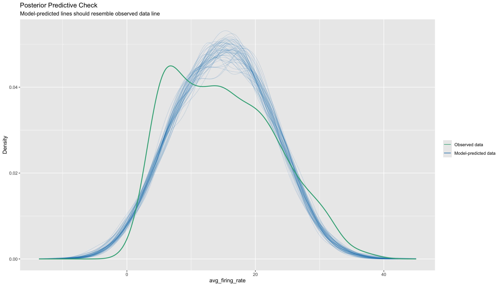
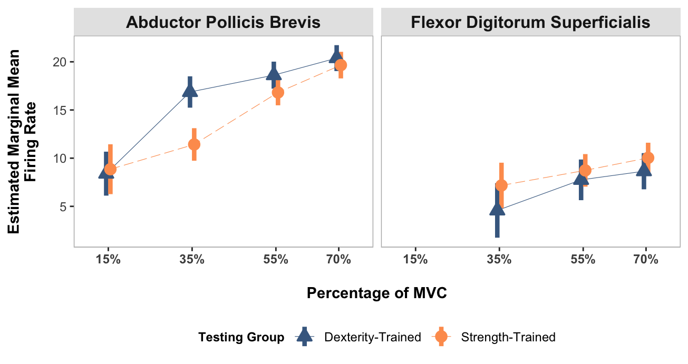
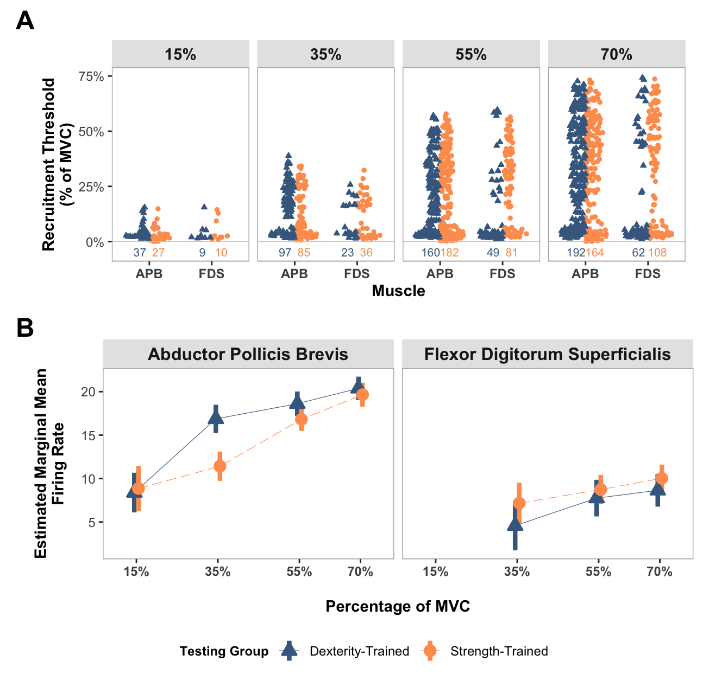

# install.packages("tidyverse")
# install.packages("ggbeeswarm")
# install.packages("lme4")
# install.packages("lmerTest")
# install.packages("merTools")
# install.packages("emmeans")
# install.packages("performance")
# install.packages("qqplotr")
# install.packages("kableExtra")
# install.packages("patchwork")
# install.packages("ggtext")
# install.packages("ggplotify")
# install.packages("svglite")Statistical Analysis of Decomposed Motor Unit Metrics with Plotting
Initialise and Input Data.
Install dependencies if needed.
Load required packages and set seed:
library(tidyverse)
library(ggbeeswarm)
library(lme4)
library(lmerTest)
library(merTools)
library(emmeans)
library(performance)
library(qqplotr)
library(kableExtra)
library(patchwork)
library(ggtext)
library(ggplotify)
library(svglite)Specify source of required helper functions:
source("mu_plots_utils.R")Load the data file for analysis:
- This is the analysed_mu_data.csv file, which has been output from the process_mu_data.m function.
mu_data <- read_csv("analysed_mu_data.csv",
col_types = cols(testing_group = col_factor(levels = c("dexterity",
"strength")), force_level = col_factor(levels = c("15",
"35", "55", "70")), trial = col_factor(levels = c("1",
"2", "3")), muscle = col_factor(levels = c("apb",
"fds"))))
glimpse(mu_data,1)Rows: 1,322
Columns: 12
$ participant <dbl> …
$ testing_group <fct> …
$ force_level <fct> …
$ trial <fct> …
$ muscle <fct> …
$ accuracy <dbl> …
$ avg_firing_rate <dbl> …
$ cov_ipi <dbl> …
$ num_ipi <dbl> …
$ firing_threshold <dbl> …
$ initial_firing_time <dbl> …
$ filename <chr> …Number of motor units identified at each force level
Table
- A cross-tabulation of the number of motor units identified at each muscle and force level within each group.
no_of_mus <- as.data.frame(table(mu_data$testing_group,
mu_data$force_level,
mu_data$muscle)
)
no_of_mus <- no_of_mus %>% rename("Testing Group" = Var1,
"Force Level" = Var2,
Muscle = Var3,
"MU Count" = "Freq") %>%
dplyr::select(Muscle, "Force Level", "Testing Group", "MU Count")
kable(no_of_mus) %>%
kable_styling(c("striped", "hover", "condensed")) %>%
collapse_rows(columns = c(1,2), valign = "middle")| Muscle | Force Level | Testing Group | MU Count |
|---|---|---|---|
| apb | 15 | dexterity | 37 |
| strength | 27 | ||
| 35 | dexterity | 97 | |
| strength | 85 | ||
| 55 | dexterity | 160 | |
| strength | 182 | ||
| 70 | dexterity | 192 | |
| strength | 164 | ||
| fds | 15 | dexterity | 9 |
| strength | 10 | ||
| 35 | dexterity | 23 | |
| strength | 36 | ||
| 55 | dexterity | 49 | |
| strength | 81 | ||
| 70 | dexterity | 62 | |
| strength | 108 |
Plot: number of motor units and firing threshold
A beeswarm plot of motor unit recruitment threshold of identified motor units at at each muscle and force level within each group.
The number of motor units identified for each muscle and force level is displayed directly below the data.
NOTE:
Custom font was used for published graphs, but removed here for reproducibility.
Some styling and organisation of plots were done in InkScape after their creation. All data elements were kept identical to their output, only aesthetic changes were made.
Show function for plotting
# FUNCTION: create_mu_beeswarm
# Creates split beeswarm plots for motor unit thresholds at each force level and for each muscle.
# Inputs:
# - data: output table from the matlab function "process_mu_data.m" - "analysed_mu_data.csv".
# Outputs:
# - Split beeswarm plot for motor unit thresholds faceted by force level and muscle.
create_mu_beeswarm <- function(data) {
# Transform input data:
# - Convert muscle labels to uppercase
# - Rename testing groups to more readable format
data <- data %>%
mutate(
muscle = toupper(muscle), # Convert APB/FDS to uppercase
testing_group = case_when( # Rename groups for better readability
testing_group == "strength" ~ "Strength-Trained",
testing_group == "dexterity" ~ "Dexterity-Trained",
TRUE ~ testing_group
)
)
# Calculate sample size for each combination of:
# - force level (15%, 35%, 55% and 70%)
# - muscle (APB, FDS)
# - testing group (Strength, Dexterity)
# This will be displayed below each group in the plot
count_data <- data %>%
group_by(force_level, muscle, testing_group) %>%
summarise(count = n(), .groups = 'drop') %>%
mutate(y_pos = -3) # Position for count labels below the data points
# Create the base beeswarm plot
plot <- ggplot(data) +
# Add jittered points (beeswarm style) for each data point
geom_quasirandom(
aes(
x = muscle, # X-axis shows muscle type (APB/FDS)
y = firing_threshold, # Y-axis shows motor unit recruitment threshold
group = testing_group, # Separate points by training group
colour = testing_group, # Color points by training group
shape = testing_group, # Different shapes for each group
fill = testing_group # Fill color for shapes
),
width = 0.3, # Controls horizontal spread of points
size = 1 # Size of individual points
) +
# Add sample size labels below each group
geom_text(
data = count_data,
aes(x = muscle, y = y_pos,
label = count,
color = testing_group,
group = testing_group),
show.legend = FALSE,
position = position_dodge(width = 0.6),
size = 8/.pt,
vjust = 1
) +
geom_hline(yintercept = 0, linewidth = 0.2, colour = "grey80") +
# Create separate panels for each force level
facet_wrap(vars(force_level), nrow = 1,
labeller = labeller(force_level = function(x) paste0(x, "%"))) +
# Add axis labels and legend titles
labs(x = "Muscle", y = "Recruitment Threshold\n(% of MVC)", color = "Testing Group",
shape = "Testing Group", fill = "Testing Group") +
# Use black and white theme as base
# Apply theme and styling which will be consistent across plots
theme_bw() +
theme(
panel.grid.major = element_blank(),
panel.grid.minor = element_blank(),
panel.border = element_rect(colour = "grey70"),
legend.position = "none",
strip.text = element_text(size = 11, face = "bold"),
axis.title = element_text(size = 11, face = "bold"),
axis.text.x = element_text(size = 9, face = "bold"),
axis.line.x = element_line(size = 0.3, colour = "grey80"),
axis.text.y = element_text(size = 9),
title = element_blank(),
strip.background = element_rect(fill = "grey90", color = NA)
) +
# Set custom shapes, colors and fills for groups
scale_shape_manual(values = c("Strength-Trained" = 21, "Dexterity-Trained" = 24)) +
scale_color_manual(values = c("Strength-Trained" = "#fe9d5d", "Dexterity-Trained" = "#456990")) +
scale_fill_manual(values = c("Strength-Trained" = "#fe9d5d", "Dexterity-Trained" = "#456990")) +
# Configure y-axis scale
scale_y_continuous(
breaks = c(0, 25, 50, 75), # Scale for each force level
labels = c("0%", "25%", "50%", "75%"),
limits = c(-5, 75) # Include space for count labels at bottom
)
# Modify point positions to create split beeswarm effect
# This separates strength and dexterity groups horizontally
p <- ggplot_build(plot)
p$data[[1]] <- p$data[[1]] %>%
mutate(
diff = abs(x-round(x)+0.1), # Calculate offset from center
x = case_when( # Apply offset in opposite directions for each group
group %% 2 == 0 ~ round(x) + diff,
TRUE ~ round(x) - diff
)
) %>%
dplyr::select(-diff)
# Convert back to gtable and return
ggplot_gtable(p)
}no_of_identified_mu_plot <- as.ggplot(create_mu_beeswarm(mu_data))
# Add y-axis label
no_of_identified_mu_plot <- no_of_identified_mu_plot +
labs(y = "Recruitment Threshold (% of MVC)")
no_of_identified_mu_plot
Linear Mixed Effects Modelling
Model 1: participant random effect
This is a linear mixed effects model of average firing rate.
The fixed effects, which are all interaction terms include:
Testing group.
Force level.
Muscle being tested.
The random effects is:
- Participant.
model_participant_only <- lmer(avg_firing_rate
~ testing_group
* force_level
* muscle
+ (1|participant),
data=mu_data
)
summary(model_participant_only)Linear mixed model fit by REML. t-tests use Satterthwaite's method [
lmerModLmerTest]
Formula: avg_firing_rate ~ testing_group * force_level * muscle + (1 |
participant)
Data: mu_data
REML criterion at convergence: 8631.2
Scaled residuals:
Min 1Q Median 3Q Max
-2.85608 -0.64716 -0.02827 0.69024 2.79719
Random effects:
Groups Name Variance Std.Dev.
participant (Intercept) 2.185 1.478
Residual 40.510 6.365
Number of obs: 1322, groups: participant, 20
Fixed effects:
Estimate Std. Error df
(Intercept) 8.4841 1.1655 305.8666
testing_groupstrength 0.5501 1.7658 380.2958
force_level35 8.3763 1.2508 1305.0159
force_level55 10.1330 1.1751 1302.0753
force_level70 11.7723 1.1671 1305.7730
musclefds -3.9109 2.4059 1304.9563
testing_groupstrength:force_level35 -5.7956 1.9035 1305.8996
testing_groupstrength:force_level55 -2.1516 1.7742 1302.8450
testing_groupstrength:force_level70 -1.2478 1.7720 1303.0207
testing_groupstrength:musclefds 0.4126 3.4020 1305.5195
force_level35:musclefds -7.9214 2.8100 1299.8804
force_level55:musclefds -7.0078 2.5929 1293.9163
force_level70:musclefds -7.3833 2.5740 1302.2729
testing_groupstrength:force_level35:musclefds 6.9268 3.9173 1303.1433
testing_groupstrength:force_level55:musclefds 2.3559 3.6388 1301.4065
testing_groupstrength:force_level70:musclefds 1.3955 3.6142 1304.5769
t value Pr(>|t|)
(Intercept) 7.279 2.85e-12 ***
testing_groupstrength 0.312 0.75557
force_level35 6.697 3.16e-11 ***
force_level55 8.623 < 2e-16 ***
force_level70 10.087 < 2e-16 ***
musclefds -1.626 0.10428
testing_groupstrength:force_level35 -3.045 0.00238 **
testing_groupstrength:force_level55 -1.213 0.22546
testing_groupstrength:force_level70 -0.704 0.48143
testing_groupstrength:musclefds 0.121 0.90349
force_level35:musclefds -2.819 0.00489 **
force_level55:musclefds -2.703 0.00697 **
force_level70:musclefds -2.868 0.00419 **
testing_groupstrength:force_level35:musclefds 1.768 0.07725 .
testing_groupstrength:force_level55:musclefds 0.647 0.51746
testing_groupstrength:force_level70:musclefds 0.386 0.69947
---
Signif. codes: 0 '***' 0.001 '**' 0.01 '*' 0.05 '.' 0.1 ' ' 1
Correlation matrix not shown by default, as p = 16 > 12.
Use print(x, correlation=TRUE) or
vcov(x) if you need itModel 2: participant and firing threshold random effect
This is a linear mixed effects model of average firing rate.
The fixed effects, which are all interaction terms include:
Testing group.
Force level.
Muscle being tested.
The random effects is:
Participant.
Firing (or recruitment) threshold.
model_participant_firing_threhsold <- lmer(avg_firing_rate
~ testing_group
* force_level
* muscle
+(1|participant)
+ (1|firing_threshold),
data=mu_data
)
summary(model_participant_firing_threhsold)Linear mixed model fit by REML. t-tests use Satterthwaite's method [
lmerModLmerTest]
Formula: avg_firing_rate ~ testing_group * force_level * muscle + (1 |
participant) + (1 | firing_threshold)
Data: mu_data
REML criterion at convergence: 8614.9
Scaled residuals:
Min 1Q Median 3Q Max
-2.16263 -0.48563 -0.01239 0.50846 2.79143
Random effects:
Groups Name Variance Std.Dev.
firing_threshold (Intercept) 17.337 4.164
participant (Intercept) 2.085 1.444
Residual 23.227 4.819
Number of obs: 1322, groups: firing_threshold, 1243; participant, 20
Fixed effects:
Estimate Std. Error df
(Intercept) 8.3931 1.1567 310.9861
testing_groupstrength 0.4613 1.7506 382.9968
force_level35 8.4735 1.2511 1305.0019
force_level55 10.2217 1.1735 1301.2391
force_level70 11.9900 1.1635 1301.4541
musclefds -3.8124 2.4043 1292.0045
testing_groupstrength:force_level35 -5.9047 1.9032 1305.9572
testing_groupstrength:force_level55 -2.2587 1.7677 1302.0853
testing_groupstrength:force_level70 -1.1877 1.7638 1300.6025
testing_groupstrength:musclefds 0.2454 3.3827 1305.5200
force_level35:musclefds -8.4772 2.8050 1294.4130
force_level55:musclefds -7.0521 2.5948 1278.9602
force_level70:musclefds -7.9241 2.5843 1277.8036
testing_groupstrength:force_level35:musclefds 7.7930 3.8992 1303.5411
testing_groupstrength:force_level55:musclefds 2.5362 3.6249 1301.6602
testing_groupstrength:force_level70:musclefds 1.8714 3.6104 1302.3398
t value Pr(>|t|)
(Intercept) 7.256 3.20e-12 ***
testing_groupstrength 0.264 0.79230
force_level35 6.773 1.91e-11 ***
force_level55 8.710 < 2e-16 ***
force_level70 10.305 < 2e-16 ***
musclefds -1.586 0.11306
testing_groupstrength:force_level35 -3.102 0.00196 **
testing_groupstrength:force_level55 -1.278 0.20155
testing_groupstrength:force_level70 -0.673 0.50081
testing_groupstrength:musclefds 0.073 0.94218
force_level35:musclefds -3.022 0.00256 **
force_level55:musclefds -2.718 0.00666 **
force_level70:musclefds -3.066 0.00221 **
testing_groupstrength:force_level35:musclefds 1.999 0.04586 *
testing_groupstrength:force_level55:musclefds 0.700 0.48426
testing_groupstrength:force_level70:musclefds 0.518 0.60431
---
Signif. codes: 0 '***' 0.001 '**' 0.01 '*' 0.05 '.' 0.1 ' ' 1
Correlation matrix not shown by default, as p = 16 > 12.
Use print(x, correlation=TRUE) or
vcov(x) if you need itComparison of model performance
This is a comparison of model performance, containing several variables.
Due to lower AICc, and higher conditional \(R^2\) and marginal \(R^2\) values, the model which includes both participant and firing threshold as random effects was chosen.
It also makes sense physiologically, with motor unit firing threshold and firing rate being related.
model_comparisons <- t(as.data.frame(compare_performance(
model_participant_only,
model_participant_firing_threhsold)))
colnames(model_comparisons) <- model_comparisons[1,]
kable(model_comparisons[-1,]) %>%
kable_styling(c("striped", "hover", "condensed"))| model_participant_only | model_participant_firing_threhsold | |
|---|---|---|
| Model | lmerModLmerTest | lmerModLmerTest |
| AIC | 8694.558 | 8680.169 |
| AIC_wt | 0.0007501172 | 0.9992498828 |
| AICc | 8695.083 | 8680.753 |
| AICc_wt | 0.0007724711 | 0.9992275289 |
| BIC | 8787.922 | 8778.720 |
| BIC_wt | 0.009941165 | 0.990058835 |
| R2_conditional | 0.3964933 | 0.6578225 |
| R2_marginal | 0.3639411 | 0.3717128 |
| ICC | 0.05117797 | 0.45538043 |
| RMSE | 6.293220 | 3.657165 |
| Sigma | 6.364729 | 4.819477 |
Checking model assumptions
Moving on with model 2 (including participant and firing threshold as random effects), here we are checking that the model assumptions are met.
Note:
High levels of multicollinearity were observed among some of the fixed effects variables. This was mainly observed in the control variables and not in the dependent variable.
This multicollinearity was unavoidable due to the nature of our hypotheses, and thus, the model was still employed to address our research questions.
plot(check_collinearity(model_participant_firing_threhsold))
plot(check_heteroscedasticity(model_participant_firing_threhsold))
plot(check_normality(model_participant_firing_threhsold))
plot(check_predictions(model_participant_firing_threhsold))
Average firing rate calculations using estimated marginal means
Calculate estimated marginal means
Here we calculate the average firing rate estimated marginal means and 95% confidence intervals. These were calculated for each testing group and muscle, conditioned on force level.
emm <- emmeans(model_participant_firing_threhsold,
pairwise
~ testing_group
| force_level
+ muscle,
adjust = 'BH',
infer = T)
emm$emmeans
force_level = 15, muscle = apb:
testing_group emmean SE df lower.CL upper.CL t.ratio p.value
dexterity 8.39 1.160 316.9 6.111 10.67 7.237 <.0001
strength 8.85 1.317 461.6 6.267 11.44 6.724 <.0001
force_level = 35, muscle = apb:
testing_group emmean SE df lower.CL upper.CL t.ratio p.value
dexterity 16.87 0.819 89.7 15.240 18.49 20.605 <.0001
strength 11.42 0.852 108.9 9.735 13.11 13.408 <.0001
force_level = 55, muscle = apb:
testing_group emmean SE df lower.CL upper.CL t.ratio p.value
dexterity 18.61 0.698 50.1 17.213 20.02 26.664 <.0001
strength 16.82 0.660 42.5 15.487 18.15 25.494 <.0001
force_level = 70, muscle = apb:
testing_group emmean SE df lower.CL upper.CL t.ratio p.value
dexterity 20.38 0.667 42.3 19.037 21.73 30.562 <.0001
strength 19.66 0.686 48.2 18.278 21.04 28.657 <.0001
force_level = 15, muscle = fds:
testing_group emmean SE df lower.CL upper.CL t.ratio p.value
dexterity 4.58 2.205 1058.3 0.253 8.91 2.077 0.0380
strength 5.29 2.078 1011.2 1.209 9.37 2.544 0.0111
force_level = 35, muscle = fds:
testing_group emmean SE df lower.CL upper.CL t.ratio p.value
dexterity 4.58 1.439 520.0 1.749 7.40 3.180 0.0016
strength 7.17 1.198 321.9 4.815 9.53 5.985 <.0001
force_level = 55, muscle = fds:
testing_group emmean SE df lower.CL upper.CL t.ratio p.value
dexterity 7.75 1.071 212.8 5.640 9.86 7.239 <.0001
strength 8.73 0.852 111.2 7.046 10.42 10.248 <.0001
force_level = 70, muscle = fds:
testing_group emmean SE df lower.CL upper.CL t.ratio p.value
dexterity 8.65 0.951 165.5 6.768 10.52 9.089 <.0001
strength 10.04 0.787 80.4 8.470 11.60 12.749 <.0001
Degrees-of-freedom method: kenward-roger
Confidence level used: 0.95
$contrasts
force_level = 15, muscle = apb:
contrast estimate SE df lower.CL upper.CL t.ratio p.value
dexterity - strength -0.461 1.755 389.7 -3.911 2.99 -0.263 0.7928
force_level = 35, muscle = apb:
contrast estimate SE df lower.CL upper.CL t.ratio p.value
dexterity - strength 5.443 1.181 99.0 3.099 7.79 4.607 <.0001
force_level = 55, muscle = apb:
contrast estimate SE df lower.CL upper.CL t.ratio p.value
dexterity - strength 1.797 0.960 46.3 -0.136 3.73 1.871 0.0676
force_level = 70, muscle = apb:
contrast estimate SE df lower.CL upper.CL t.ratio p.value
dexterity - strength 0.726 0.957 45.2 -1.200 2.65 0.759 0.4516
force_level = 15, muscle = fds:
contrast estimate SE df lower.CL upper.CL t.ratio p.value
dexterity - strength -0.707 3.030 1052.2 -6.653 5.24 -0.233 0.8156
force_level = 35, muscle = fds:
contrast estimate SE df lower.CL upper.CL t.ratio p.value
dexterity - strength -2.595 1.873 424.3 -6.276 1.09 -1.386 0.1666
force_level = 55, muscle = fds:
contrast estimate SE df lower.CL upper.CL t.ratio p.value
dexterity - strength -0.984 1.368 161.8 -3.686 1.72 -0.719 0.4731
force_level = 70, muscle = fds:
contrast estimate SE df lower.CL upper.CL t.ratio p.value
dexterity - strength -1.390 1.235 119.9 -3.835 1.05 -1.126 0.2624
Degrees-of-freedom method: kenward-roger
Confidence level used: 0.95 Plotting the estimated marginal means
Here the average firing rate is plotted, which each muscle in its own facet.
NOTE:
15% MVC in the FDS muscle was not included in the analysis due to the low number of identified motor units.
Custom font was used for published graphs, but removed here for reproducibility.
Some styling and organisation of plots were done in InkScape after their creation. All data elements were kept identical to their output, only aesthetic changes were made.
Show function for plotting
# FUNCTION: create_emmeans_plot
# Creates geom_point plot for the estimated marginal mean motor unit firing rate
# at each force level and for each muscle.
# Inputs:
# - data: output from the EMmeans function used for calculation of estimated marginal means in linear
# mixed effects models
# Outputs:
# - Plot of EMM average motor unit firing rate faceted by muscle.
create_emmeans_plot <- function(emm) {
# Process estimated marginal means data:
# - Rename columns for clarity
# - Convert force levels to numeric
# - Format group names
# - Filter to include only specific force levels for each muscle
processed_emm_data <- as.data.frame(emm$emmeans) %>%
rename(Mean = emmean,
Lower_CI = lower.CL,
Upper_CI = upper.CL) %>%
mutate(
force_level = as.numeric(gsub("MVC", "", as.character(force_level))),
muscle = case_when(
muscle == "apb" ~ "Abductor Pollicis Brevis",
muscle == "fds" ~ "Flexor Digitorum Superficialis",
TRUE ~ muscle
),
testing_group = case_when(
testing_group == "strength" ~ "Strength-Trained",
testing_group == "dexterity" ~ "Dexterity-Trained",
TRUE ~ testing_group
)
) %>%
# Filter data to include:
# - APB muscle: 15%, 35%, 55%, 70% force levels
# - FDS muscle: 35%, 55%, 70% force levels
filter((muscle == "Abductor Pollicis Brevis" & force_level %in% c(15, 35, 55, 70)) |
(muscle == "Flexor Digitorum Superficialis" & force_level %in% c(35, 55, 70)))
# Create plot showing estimated means and confidence intervals
ggplot(processed_emm_data, aes(x = force_level, color = testing_group)) +
# Add fine lines connecting means within each group
geom_line(aes(y = Mean, group = testing_group, linetype = testing_group),
linewidth = 0.2, position = position_dodge(width = 2)) +
# Add points with error bars showing confidence intervals
geom_pointrange(aes(y = Mean, ymin = Lower_CI, ymax = Upper_CI,
shape = testing_group, fill = testing_group),
linewidth = 1.5, size = 0.7, position = position_dodge(width = 2)) +
# Add labels and titles
labs(
x = "Percentage of MVC",
y = "Estimated Marginal Mean\nFiring Rate",
color = "Testing Group",
shape = "Testing Group",
fill = "Testing Group",
linetype = "Testing Group"
) +
# Apply black and white theme and customize appearance
theme_bw() +
theme(
panel.grid.major = element_blank(),
panel.grid.minor = element_blank(),
panel.border = element_rect(colour = "grey70"),
legend.position = "bottom",
strip.text = element_text(size = 12, face = "bold"),
axis.title.x = element_text(size = 11, face = "bold", margin = margin(t = 15)),
axis.text.x = element_text(size = 9, face = "bold"),
axis.line.x = element_line(size = 0.3, colour = "grey80"),
axis.title.y.left = element_text(size = 11, face = "bold", margin = margin(r = 10)),
axis.text.y = element_text(size = 9),
title = element_blank(),
strip.background = element_rect(fill = "grey90", color = NA) ,
legend.title = element_text(size = 9, face = "bold"),
legend.text = element_text(size = 9)
) +
# Configure x-axis scale and labels
scale_x_continuous(
limits = c(10, 75),
labels = scales::percent_format(scale = 1),
breaks = c(15, 35, 55, 70)
) +
# Set custom shapes, colors, fills and line types for groups
scale_shape_manual(values = c("Strength-Trained" = 21, "Dexterity-Trained" = 24)) +
scale_color_manual(values = c("Strength-Trained" = "#fe9d5d", "Dexterity-Trained" = "#456990")) +
scale_fill_manual(values = c("Strength-Trained" = "#fe9d5d", "Dexterity-Trained" = "#456990")) +
scale_linetype_manual(values = c("Strength-Trained" = 5, "Dexterity-Trained" = 1)) +
# Create separate panels for each muscle
facet_wrap(~ muscle)
}mu_avg_firing_rate_plot <- create_emmeans_plot(emm)
mu_avg_firing_rate_plot
Combining the plots into the final figure
Using patchwork to combine figures
final_plot <-
(no_of_identified_mu_plot + labs(tag = "A")) /
(free(mu_avg_firing_rate_plot) + labs(tag = "B")) +
plot_layout(
guides = 'collect', # Collect all legends
) &
theme(legend.position = "bottom") +
plot_annotation(tag_levels = "A") + # Add tags
theme(plot.tag = element_text(size = 18, face = "bold"))
final_plot